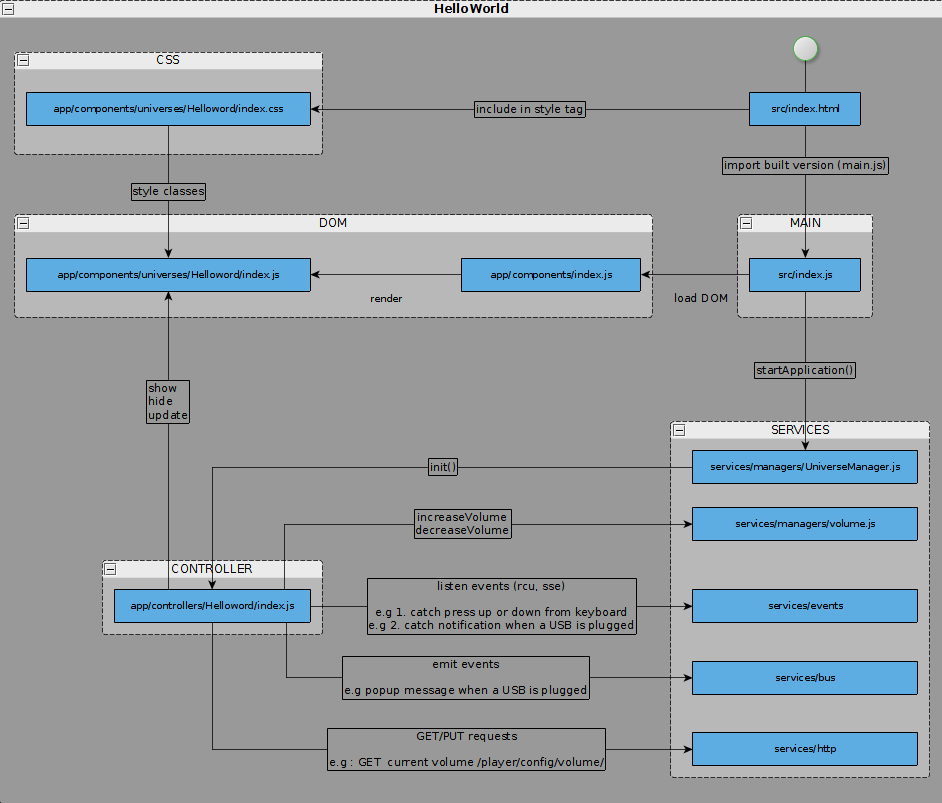

Prerequisites
Start UI from Set-Up-Box
Debugging
: both on browser and remotely on STB embedded webkit browser
REST-console
: to test request to server
@feb 2017, no STB is installed, so we only use a computer running Linux, a browser and node
download code
$ git clone git@github.com:frogbywyplay/apps_frog-ui.git
(prerequisite : open github account and access to source - ssh key)
$ sudo apt-get update
$ sudo apt-get install nodejs
$ sudo apt-get install npm
/!\ to resolve conflicting “node” use
$ sudo ln -s /usr/bin/nodejs /usr/local/bin/node
$ npm install
Start the webpack-dev-server :
$ npm start
Open the UI in your browser using the following URL: http://0.0.0.0:8080/?stbIp=127.0.0.1&debug=true
Live reload works great. Every change in ./src is recompliled and browser is reloaded automatically
See README for all available options or read
here
Including brief description and doc links
RootDirectory
.
├── doc : script to generate documentation
├── script : other scripts (e.g cli output)
├── src : ui js script
├── test : unit test code
├── CHANGELOG : log changes in different versions of code
├── config.json : default config, to be overrided by config.local.json
├── config.webpack.json : config for webpack server
├── CONTRIBUTING.md
├── LICENSE
├── package.json : list modules dependencies and available script
├── README.md
└── webpack.config.babel.js : config for module bundling
Javascript sources
./src
├── app
├── locales :
├── services
├── utils
├── widgets
├── index.css
├── index.html
└── index.js
App
./src/app
├── assets
├── components
├── config
├── controllers
├── models
└── utils
./src/services
├── api
│ ├── index.js
│ ├── scan.js
│ └── …
├── managers
│ ├── index.js
│ ├── ScanManager.js
│ ├── UniverseManager.js
│ ├── volume.js
│ └── …
├── models
│ ├── channels
│ ├── …
│ ├── index.js
│ ├── Subtitle.js
│ └── …
├── bus.js
├── events.js
├── http.js
└── Model.js
/!\ Portal Frog documentation is outdated
Widgets
./src/widgets
├── list
├── Component.js
└── index.js
/!\ a word on how DOM is handled - components - philosophy - JSX - BEM
Utils
Link to doc
./src/utils
├── CircularList.js
├── config.js
├── Controller.js
├── date.js
├── dom.js
├── Singleton.js
├── string.js
└── …
In project root :
$ npm run build-doc
Documentation will build here : [apps_frog-ui/esdoc/index.html]
Class , Functions and Variables are listed here : [apps_frog-ui/esdoc/identifiers.html]
API webservices are listed here : [apps_frog-ui/esdoc/source.html]
(eg : volume.js service disposes of following webservices and REST calls : decreaseVolume, increaseVolume, getMute, mute, unmute)
Implemented unit tests : [apps_frog-ui/esdoc/test.html]
/!\ mocking request to API can be done using JS library xhr-mock . List of all routes used in the frog-ui along with request and response samples are available here
TODO : Push new helloWorld code

component : DOM unit used by the application to define both UI component (example : a button)and views (example: a side-bar)
$ mkdir src/app/components/universes/HelloWorld
$ touch src/app/components/universes/HelloWorld/index.js
style component
$ touch src/app/components/universes/HelloWorld/index.css
add component to the “Application” main view defined in : src/app/components/index.js
controller : listens to events (from MW, from Application via Bus, from Keyboard), update view, retrieve via service API
$ mkdir src/app/controllers/HelloWorld/
$ touch src/app/controllers/HelloWorld/index.js
controller needs to be referenced in main Manager defined in : src/app/services/managers/UniverseManager.js
add “Hello World” item to Home Menu in : src/app/models/Home.js
Conclusion :
code is generic enough, as well as documented and structured. Existing features works as good examples to developnew features.
Adding new components using existing features is possible
To pick up on the code, knowledge of Babel ES6 and webpack or likewise libraries is required
Nodejs, npm, Javascript, HTML, CSS
Babel
: Javascript compiler - allows the use of ECMAScript 6
ECMAScript
. Compiler targets ECMAScript ES5 (supported by most browsers)
Mocha
: unit test framework - handles async calls
webpack
: module bundler, build code in unique file main.js
| Library | Description |
|---|---|
| css-loader, exports-loader, json-loader, style-loader, file-loader | chaque loader prend un fichier source et retourne la nouvelle source après la moulinette webpack |
| eslint | JS lint* |
| stylelint | CSS lint* |
| xhr-mock | mock response to server request |
| istanbul | code coverage - Mocha dependency |
| jsdom | mock DOM using JS - Mocha dependency |
| postcss | compil Css-next (CSS form the future) in compatible CSS |
| mixin | JS object tools |
| array-flatten | array tool |
| sinon | test spies, stubs and mocks. |
*lint : code checker (common mistakes, respect coding standards, codes rules)